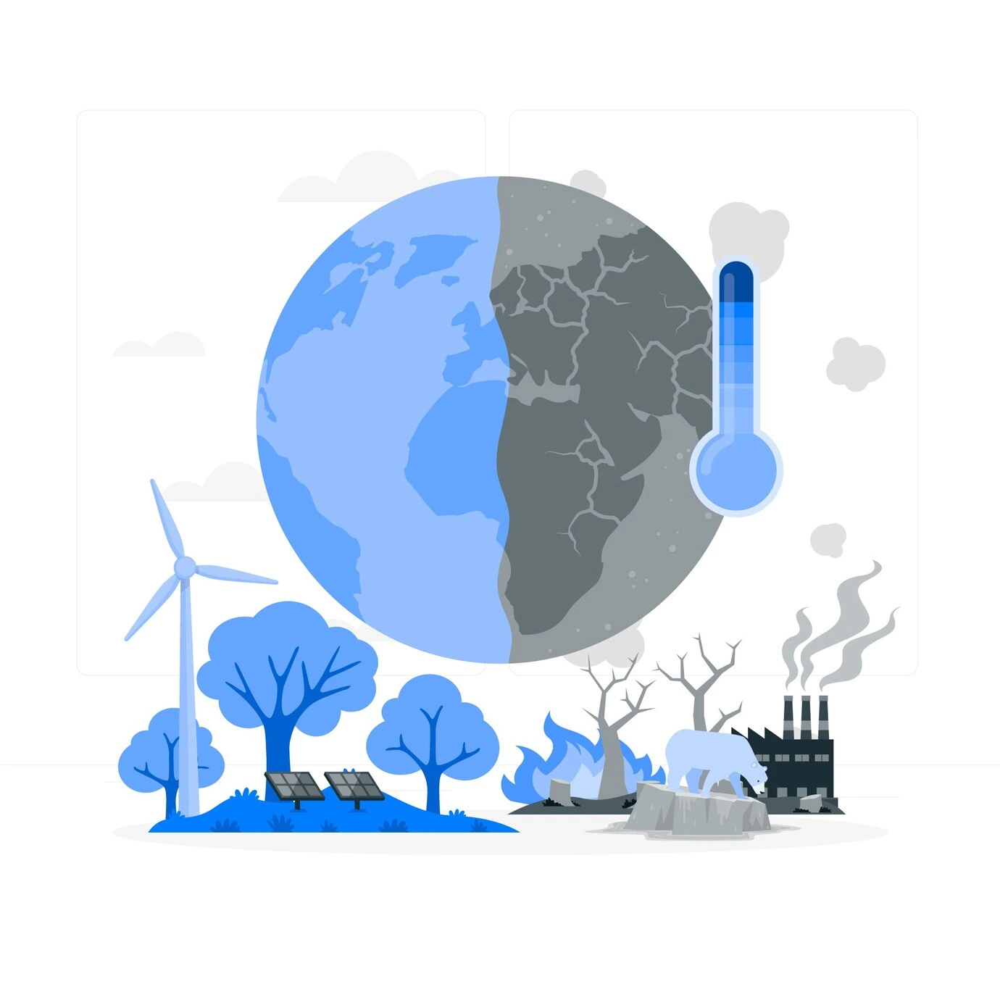
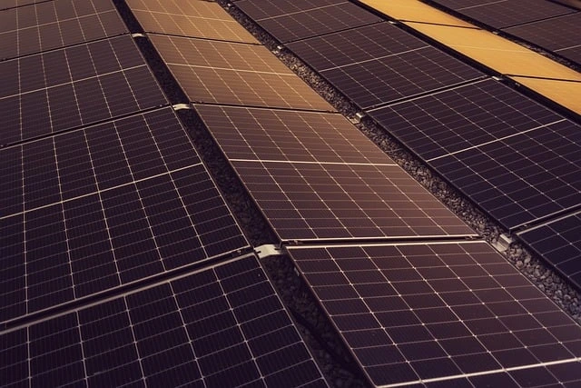
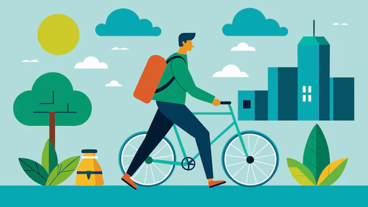
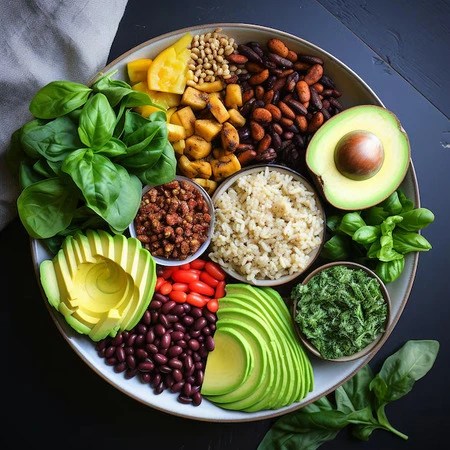
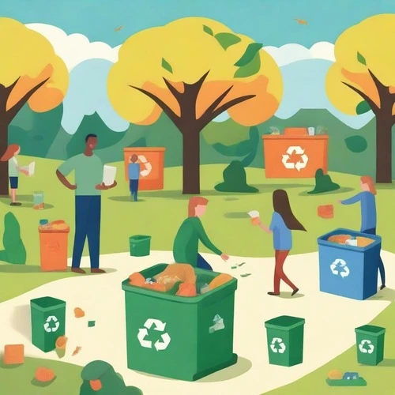
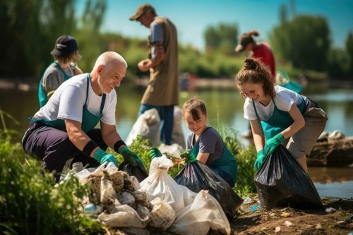

Climate Actions
Climate change is becoming an increasingly dangerous issue as the days go on. The only way to fight this is to practice sustainabilty to prevent emissions. There are lots of ways to do this such as using renewable energy sources like solar panels, taking public transport or cycling and recycling and reusing old items.
How can I help?
It's easier than you think. A lot of the ways to help are only simple changes for the better. Below are some practices you can do to help reduce your emissions.

1. Change your source of energy
You can ask your utility company whether your house uses oil, coal and gas for your electricity. Coal and gas produces the most emissions. Coal being the worst, followed by oil and then gas which is the best. Natural gas emits 50 - 60% less carbon dioxide compared to coal.
If possible, you can ask if you could switch to gas if you are on a different energy source to immediately start using less emissions in total. Another way to generate electricity is to install solar panels onto your home. They collect solar energy during the day and produces little to none emissions at all, being the most helpful to the planet while giving the same effects as the other electricity sources.

2. Walk, cycle or take public transport
If you need to go to work or even to just go out, maybe take a bus to where you need to be or even cycle and walk if it's not too far. When you use public transport, walk or cycle, you are saving the burning diesel or petrol greenhouse gas emissions by not driving on the already clogged streets. If you cycle or walk to wherever you need to be, you produce no emissions at all. Of course sometimes you can't walk or cycle somewhere but it's important to keep it in mind if you can avoid driving.
On top of saving green house gas emissions, it's good for your health as well. It benefits the enviorment and yourself in the long run.

3. Eat more vegetables and throw out less food
Eating more fruits, vegetables, whole grains, legumes, seeds, nuts, and less meat and dairy can lower your environmental impact by a large amount. Producing plant based foods reduces green house gas emissions and energy usage.
What you can do is be more concious about how much food you throw out because you bought too much, you can shop for those foods with a reusable bag as to not waste paper and if you want, you could move to a plant based diet which reduces your enviormental impact by a lot as compared to a meat based diet.

4. Reusing and recycling
Electronics, plastics and clothes we use cause carbon emissions everytime they are produced, in fact every step of the production process causes emissions. To protect the climate and reduce your emissions, buy less things, shop in thrift stores for second hand clothes and shop second hand for electronics or in general anything you can and repair anything you can repair instead of throwing it out and buying a new item.
Plastic is one of the biggest causes of gas emissions in the world and only a small amount of plastics are recycled. Once plastic is thrown away, it can linger for hundreds of years and cause many problems for the life on earth. Make sure any plastic products you buy are recycled or recyclable and recycle them once finished with them.

5. Cleaning up the enviornment
Humans, plants and animals all suffer from contaminated land and water caused by thrown out trash. Use what you need and throw out whatever you used properly. Items thrown out on the streets for example can cause damage to animals around and make the area there look messy. Trash thrown into water can sometimes kill fish depending on the item and some might end up eating it.
Educate other people to also do the same of throwing out items properly. Maybe particpate in local clean ups of a beach, park or a river.